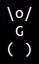

#!/bin/bash
Az utóbbi időben mindenféléket írogatok, Bash-ben. Hogy miért shell script? Egyszerűen azt is mondhatnám, miért ne, de igazából arról van szó, hogy élvezem ennek a nyelvnek a használatát. Adatstruktúrából nincs sok, van tömb, asszociatív tömb és kb. ennyi, nincs objektum, nincs beépített lebegőpontos aritmetika. :) Igazi kihívás valami bonyolultabb problémát shell scriptben megírni, mégis előfordul, hogy a megoldás egész hatékony.
Ismét felmerül a kérdés, hogy miért próbálok bonyolult dolgokat shell scriptben megcsinálni, mikor azokra vannak más, bejáratott programozási nyelvek, metódusok. Egyszerűen azért mert szívás. Folyton workaroundokban kell gondolkodni, különböző trükköket kell bevetni, gondolkodtat, és szeretem feszegetni a határokat. Emellett ott van még a teljes userland, amit aztán úgy használok, ahogy csak akarok. A megoldás természetesen nem a leggyorsabb, néha fájdalmasan is lassú lehet, viszont shell scripteket könnyedén és gyorsan lehet írni.
Létrehoztam egy oldalt, ahol közzétettem néhány scriptemet: http://bash.sidenote.hu/
Eddig a következőket tettem fel:
- ASCII labirintus generátor,
- Debian font csomag preview script,
- logaritmikus spirál kirajzoló script,
- Mandelbrot halmaz kirajzoló script.


{kind=link}
{kind=link}
Minden script GNU GPL v3-as licenccel van ellátva. Hogy a licenc mit enged és mit nem, megtaláljátok a shell script oldalon. További scriptek várhatók, pl. amint lesz időm szépen bekommentezem, és kiteszem a Bash-ben írt Game of Life szimulátoromat, mely az alábbi képre kattintva működés közben is megtekinthető. VIGYÁZAT, MÁSFÉL MEGÁS ANIMGIF!
{kind=link}
A következő nagy projekt a Gorillas játék Bash változata. Hosszú lesz megírni, és egészen biztos vagyok benne, hogy fájdalmasan lassan fog futni, de akkor is… Jó lesz!
